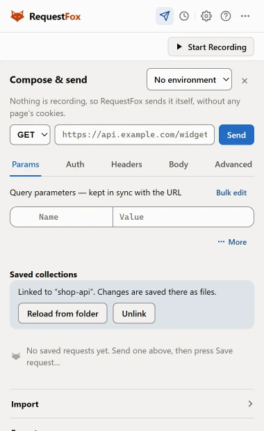

Side by side
| RequestFox | Bruno | |
|---|---|---|
| What it is | A browser extension that records and tests the calls a web app makes | A Git-friendly, offline-first API client [1] |
| Account | None | Not required [1] |
| Where requests live | In your browser; in Chrome, a linked folder can hold them as files too | Files in your collection folder, requests in YAML, to version in Git [1] |
| Calls your web app makes | Recorded as you click, with problems flagged | You write the requests |
| CI | A one-file CLI exported from the panel: assert, run, conform and loadtest, over HTTP/2 if you ask | Bruno CLI runs collections from the terminal [2] |
| Price | Free, no paid tier | No account needed; an email is asked for only if you buy a licence key [1] |
Where Bruno is stronger
- Requests as readable files you review like code, in Git [1].
- A desktop client, so a web page's CORS rules never apply.
- NTLM and Akamai EdgeGrid auth [3], which RequestFox does not have.
Where RequestFox is different
- Nothing to write first: it captures what the app sent, in the session you are signed in to.
- It flags problems as they happen and ties each to your click.
- Mock and fault rules change the answers your app gets, right in the browser.
Requests as files, in Chrome too
In Chrome, Compose → Export → Link a folder… writes your saved requests, environments, suites, checks and rules as files to a folder you pick, and keeps them up to date there, so they can live in Git next to the code. Bruno collections import from Compose → Import → Import a collection….

Sources
- Bruno Docs, "Getting Started" (what Bruno is). Checked 1 November 2026. docs.usebruno.com
- Bruno Docs, home: Bruno CLI and Licensing. Checked 1 November 2026. docs.usebruno.com
- Bruno Docs, "Authentication" overview. Checked 1 November 2026. docs.usebruno.com
Something here out of date? Tell us at the address in the privacy policy and we will fix it.